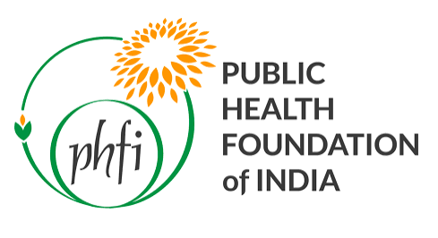
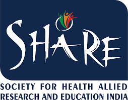

Yashoda Academy of Medical Education and Research (YAMER) is a Not-For-Profit Society registered under the applicable societies registration act. It is governed by its general body and Executive committee (Governing Body) in accordance with its Memorandum of Association and Rules and Regulations.
The Yashoda Academy of Medical Education and Research (YAMER) is a not-for-profit institution established primarily to promote, facilitate and strengthen medical and health research. Its central objective is to develop a high-quality research ecosystem that supports clinical, basic, translational, interdisciplinary and technology-enabled research across medical, surgical, super-specialty and allied health disciplines.
YAMER provides an institutional platform for the development and conduct of research addressing important clinical, public-health and health-system priorities. It promotes investigator-initiated studies, multicentre research, clinical trials, observational studies, registries, implementation research, community-based studies and collaborative research involving hospitals, universities, research institutions and funding agencies.
The Academy encourages research in clinical and basic medical sciences and in interdisciplinary areas such as molecular biology, cytogenetics, biotechnology, genetics, diagnostics, biomedical sciences, digital health, artificial intelligence, medical technology and other emerging fields. Particular emphasis is placed on generating scientifically rigorous evidence that can improve clinical decision-making, patient outcomes, quality of care and healthcare delivery.
YAMER supports the complete research lifecycle, including identification of research priorities, protocol development, scientific review, ethical oversight, regulatory compliance, data management, statistical analysis, publication and dissemination of findings. It seeks to strengthen research infrastructure, standard operating procedures, quality assurance systems and institutional mechanisms necessary for conducting responsible and high-quality research.
To ensure scientific and ethical integrity, the Academy may establish and support bodies such as the Scientific Council, Scientific Review Committee, Institutional Ethics Committee, Academic Council and other specialized research committees. These committees provide scientific guidance, ethical review, governance, monitoring and oversight of research activities undertaken under the auspices of YAMER.
The Academy promotes national and international collaborations for joint research, multicentre studies, technology development, faculty exchange and capacity building. It may obtain research grants, donations and financial support from governmental agencies, universities, scientific bodies, philanthropic organizations and other eligible institutions, in accordance with applicable laws and institutional policies.
YAMER also undertakes community health surveys, screening programmes, epidemiological studies and health-service initiatives in rural, underserved and underdeveloped urban areas. These activities are intended to generate locally relevant evidence, identify unmet health needs and develop practical models for disease prevention, early detection and improved access to healthcare.
Research capacity building is an important supporting function of YAMER. The Academy may conduct workshops and short-term programmes in research methodology, biostatistics, research ethics, clinical trials, scientific writing, data management, hospital administration and emerging medical technologies. It may also provide fellowships, scholarships and structured training opportunities to clinicians, researchers and allied health professionals seeking advanced research experience.
Educational activities, including Continuing Medical Education programmes, postgraduate teaching and specialty training, may be undertaken where they directly contribute to the Academy’s broader research, professional development and healthcare-improvement objectives. Such programmes remain supportive to YAMER’s primary mission of advancing medical research and evidence-based practice.
Through its research programmes, collaborations, governance systems and capacity-building initiatives, YAMER aims to emerge as a centre of excellence for medical and health research, committed to scientific innovation, ethical research conduct, translation of evidence into practice and improvement of patient and population health.
Multi-departmental study evaluating machine-learning-assisted screening pathways across radiology and oncology.
View project →Longitudinal registry tracking recovery markers and readmission rates across Yashoda Hospitals cardiac care units.
View project →Deployment study of a predictive scoring model integrated into the Yashoda Connect clinical platform.
View project →| Title | Authors | Journal | Year |
|---|---|---|---|
| Outcomes of minimally invasive cardiac surgery in high-risk patients | Rao S. et al. | Indian Heart Journal | 2026 |
| Machine learning models for sepsis prediction in tertiary ICUs | Iyer P. et al. | Journal of Critical Care | 2026 |
| Long-term renal outcomes after robotic partial nephrectomy | Verma A. et al. | Indian Journal of Urology | 2025 |
| Antimicrobial stewardship impact across multi-centre ICUs | Krishnan M. et al. | Clinical Infectious Diseases (India) | 2025 |
AI-driven diagnostic and triage tools developed in partnership with clinical departments.
Remote monitoring and patient-engagement platforms built on real-world clinical data.
Point-of-care systems embedded in the Yashoda Connect platform.
Applied analytics and medical technology development across specialties.


"YAMER is committed to advancing ethical, high-quality medical research that improves patient care and public health. We aim to foster innovation, multidisciplinary collaboration, evidence-based clinical practice and translating scientific findings into meaningful health outcomes. As a not-for-profit institution, we remain dedicated to integrity, excellence and service to society."President, YAMER — Yashoda Academy of Medical Education and Research